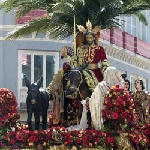
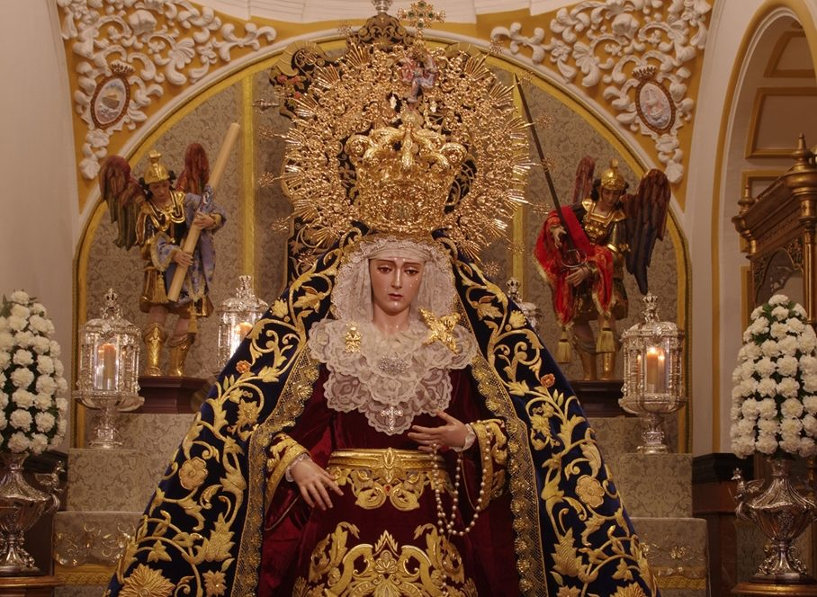
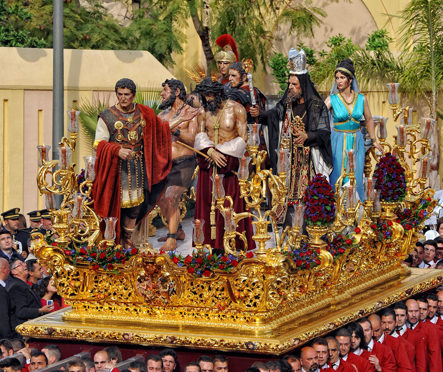
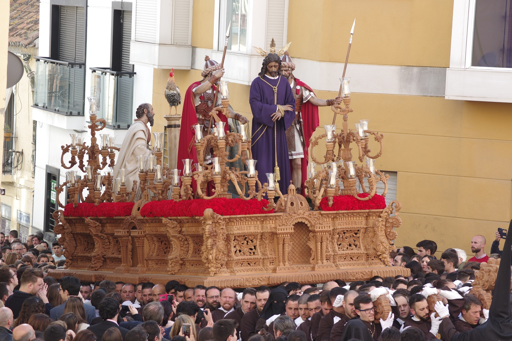
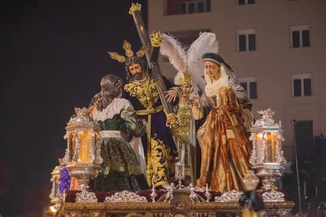
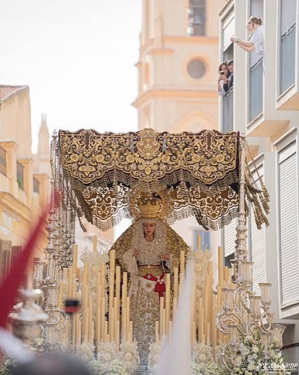
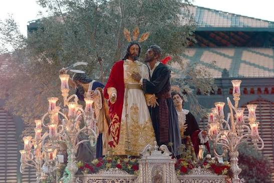
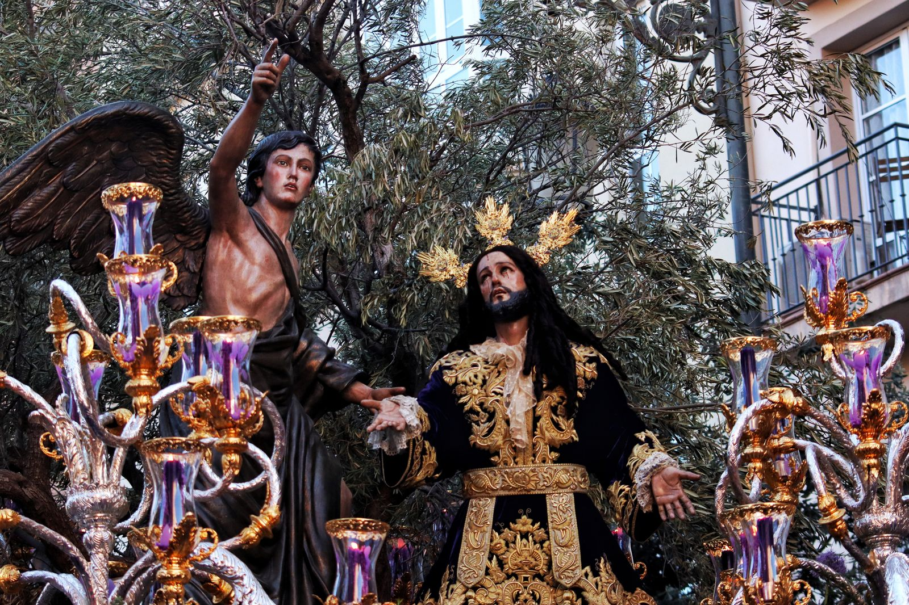

Historia, devoción y el caminar del Cautivo
El Domingo de Ramos abre con alegría la Semana Santa de Málaga. La jornada comienza por la mañana con la popular "Pollinica", llenando las calles de niños y palmas blancas. Por la tarde, el ambiente se transforma con el discurrir de cofradías solemnes como Lágrimas y Favores, Humildad, Dulce Nombre, Salutación, Salud y la espectacular salida de la Hermandad del Prendimiento, consolidando un día lleno de luz y mantillas.

Pollinica
Es la cofradía que abre la Semana Santa, protagonizada por los niños con palmas. Representa la entrada triunfal de Jesús en Jerusalén con un ambiente alegre y familiar.

Lágrimas y Favores
Ligada a las Reales Cofradías Fusionadas, destaca por su vinculación con el actor Antonio Banderas. Su procesión por las calles de Málaga es de las más seguidas y emotivas.

Humildad
Con sede en el Santuario de la Victoria, representa el pasaje del Ecce Homo. Su cortejo destaca por la solemnidad y el espectacular manto bordado de la Virgen de la Merced.

Dulce Nombre
Procedente del barrio de Capuchinos, es una de las cofradías más jóvenes del día. Destaca por el andar alegre de sus tronos y el cariño de sus vecinos.

Salutación
Representa el momento único en que Jesús se encuentra con las piadosas mujeres de Jerusalén. Su cortejo destaca por el rigor litúrgico y el cuidado espíritu nazareno.

Salud
El Señor de la Salud realiza su salida desde la Iglesia de San Pablo en la Trinidad. Su estación de penitencia en la Catedral de Málaga es uno de sus momentos cumbre.

Prendimiento
Muy popular en el barrio de Capuchinos. Es famosa por el espectacular balanceo del trono de la Virgen del Gran Perdón y el olivo gigante que acompaña al Señor.

Huerto
Una de las corporaciones históricas del barrio de El Perchel. El trono del Señor recrea de manera magistral la Oración en el Huerto de los Olivos bajo un olivo natural.
Una de las corporaciones históricas del barrio de El Perchel. El trono del Señor recrea de manera magistral la Oración en el Huerto de los Olivos bajo un olivo natural.